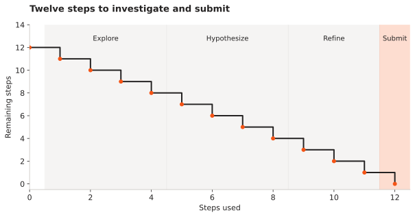

Fab Yield Agent
At the Meta Open Environment hackathon, our team built a gym for an agent acting as a semiconductor process engineer. Its next experiment matters because the episode has a strict budget.
- Environment
- Response-surface simulator
- Episode budget
- 12 steps
- Training workflow
- Qwen2.5-7B / GRPO
Can an agent choose informative process experiments and submit a defensible recipe within twelve steps?
What the agent can see and change
The environment uses a response-surface simulator with process parameters and hidden causal structure. An episode begins with reset(), then step(action) returns observations, reward signals and completion state. The agent proposes parameter changes and can submit a final recipe for review.
The implemented budget is twelve steps, including final submission. The phase schedule assigns steps 1–4 to exploration, 5–8 to hypothesis testing, 9–11 to refinement and step 12 to submission. This is an environment rule, not a claim that every successful policy follows that sequence.

The training workflow and the evidence boundary
The repository documents a Qwen2.5-7B-Instruct workflow using GRPO, Unsloth and Hugging Face TRL. It also links the training notebook and experiment tracking. Those are useful project artifacts; I am not treating a screenshot of a reward curve as proof of generalization.
The current reward code differs from the earlier project description. The manufacturing harness note records the implemented coefficients and the limitations of its feedback proxies. Any new training comparison must record which environment and reward version it used.
How I want to evaluate the next version
| Baseline or test | Reason for including it |
|---|---|
| Random search, same twelve-step budget | Check whether the policy adds value beyond taking samples. |
| Simple optimization policy | Compare against a non-LLM approach on identical simulator seeds. |
| Held-out process settings | Test whether the policy relies on memorized parameter relationships. |
| Repeated lots | Measure variation in the final recipe’s simulated yield. |
| Ablated feedback terms | Check whether each reward component changes decisions usefully. |
A simulated process is the right place to test these questions cheaply and repeatedly. Transfer to real fabrication requires a separate model of the process, its measurements and its constraints. The hackathon prototype establishes an agent environment, not factory readiness.
References and project records
- Fab Yield Agent repository
Environment, models, project history and setup.
- Pinned environment implementation
Episode phases, maximum steps and current reward calculation.
- OpenEnv
The environment interface used in the project.
- Team training notebook
The published training workflow.
- Hackathon story and gallery
Project recording and event context.